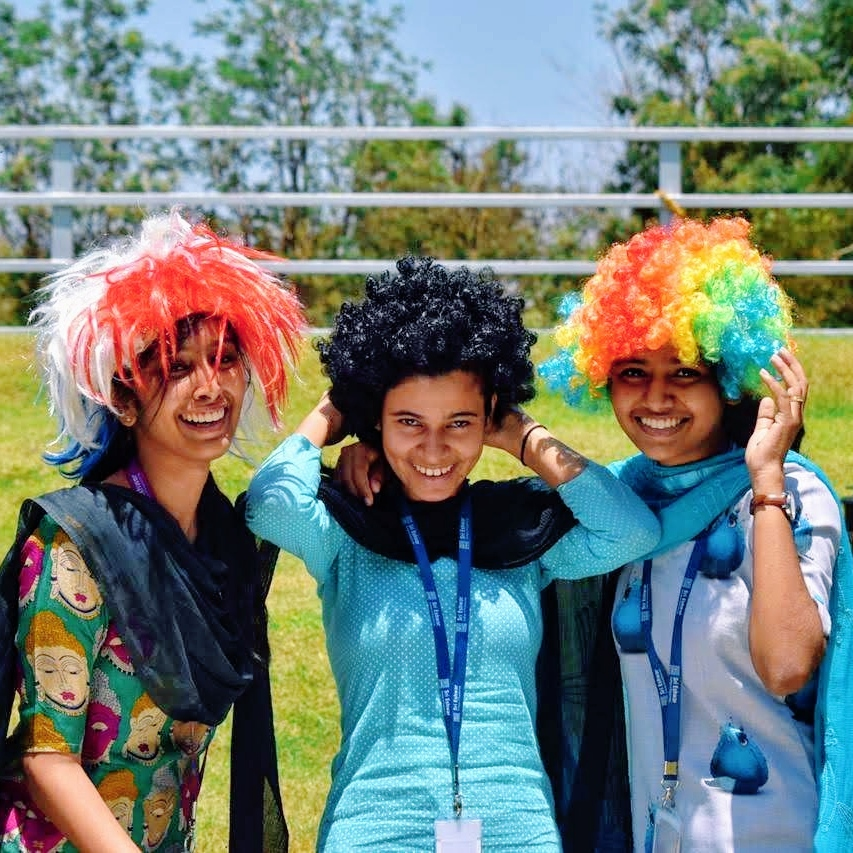
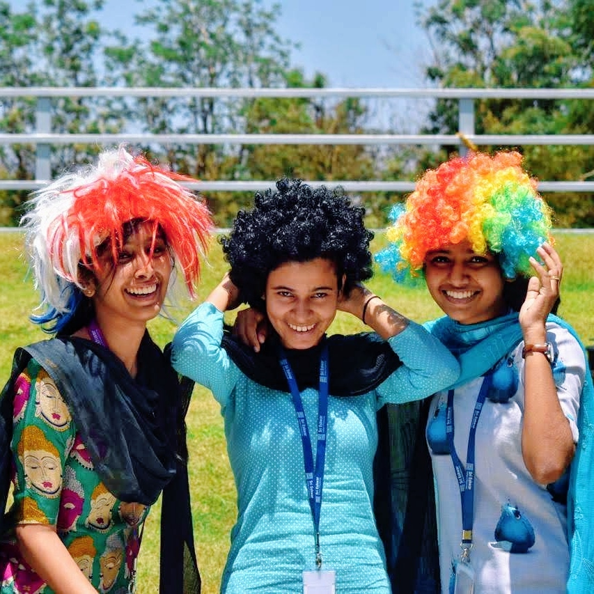
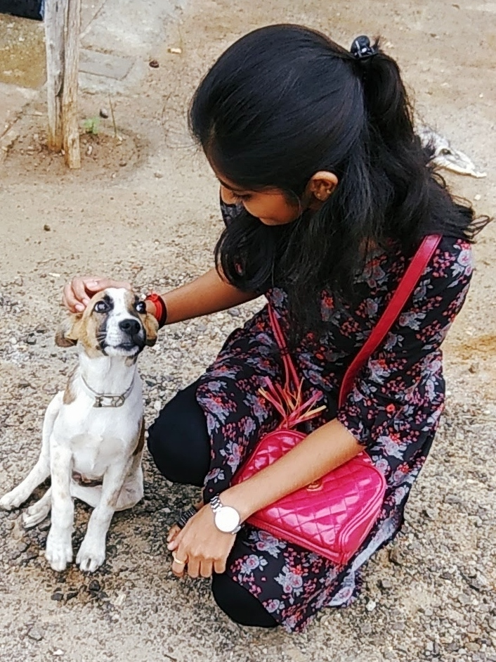
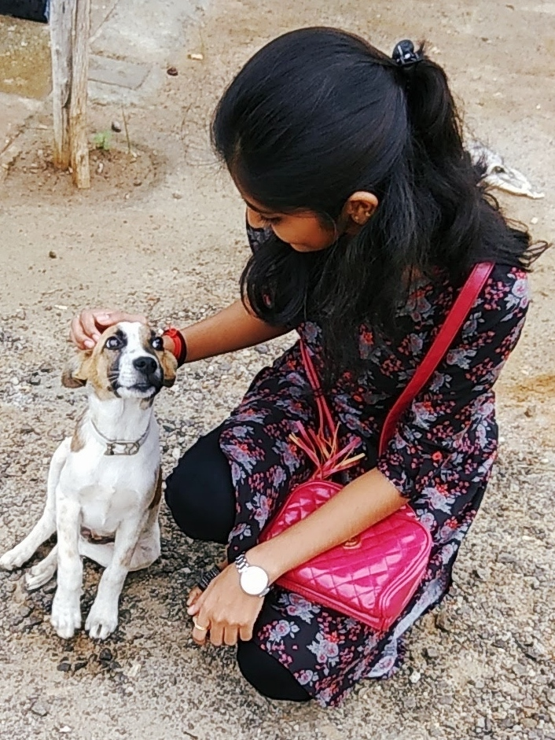

Family❤


We are a family of four who loves travelling and always go on unplanned trips. Sometimes I feel like I must be really lucky to be born to them because I can share anything and everything to them. They treat me as their best friend and that’s how they are.
I would actually say, my Dad is the coolest. He is very much hardworking and he loves to drive and travel as well. He never lets his problem hit us and does every little thing to make us happy and takes us to explore almost every place. He shows what is love by the way he cares for us.
Each one of us must have got inspired and wondered by someone. In my story, it’s always my Mom. Yes, she is an Astrologer by profession and she keeps developing on it as her passion. She is a mother of two, yet she never stops to keep herself growing and also taking us grow with her. She takes care of the family along with her job and moreover she is doing her Ph.D. in her passion. I wonder how she manages all these but you know the fact that MOM is always MOM.
I’ve a cute little brother who is 8 years younger than me. As my parents are working, it was me who raised him, most of the time. Lol, I feel like a responsible person and a caring sister for him. He is so naughty that we have no day without annoying and fighting with each other yet it feels bored without doing those.
 



 
